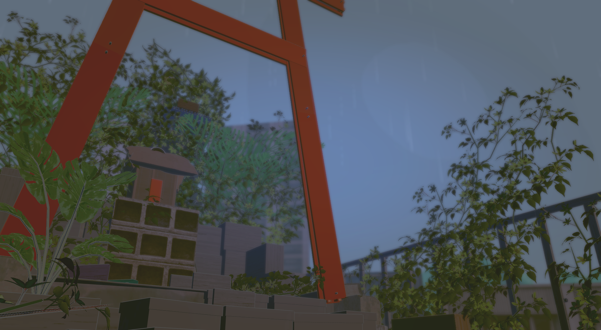

v.0.5

image
背景画像元『gogh』
work
作品元『天気の子』
映画作品のファンによる非公式コスプレ交流会
『 天 気 の 子 』
第 １ 回 コ ス プ レ イ ベ ン ト
非公式ファンイベント · 非営利
A R A I S H I I · ２０２６
tap to begin
し お り
本 家
play official
×
— 本 家 映 像 —
『 天 気 の 子 』 予 告
© toho · official trailer
×
遊 ぶ
— program —
し お り
01
３ 人 で チ ャ ー ハ ン 作 り
02
天 気 探 し
03
参 考 フ ォ ト 集
04
屋 上
← back
← back
参 考 フ ォ ト 集
← back
— rooftop —
屋 上 ID
89GV0QP8G50E
コ ピ ー